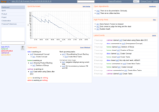
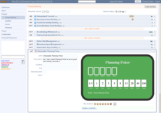
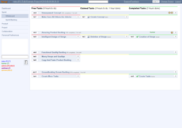

Dashboard | |
|  |
The dashboard shows all important information relevant to the current sprint. This includes the Sprint Burndown, current Risks and Impediments, Tasks and Issues that are in progress or still to be done, and new entries in the event journal. |
Product Backlog | |
|  |
The Product Backlog is a prioritized list of desired product features in form of User Stories. While the Product Owner keeps the backlog up to date, the Team estimates the effort necessary to implement those Stories (using Planning Poker). Based on this estimation and the teams performance in prior Sprints, it is possible to project the scopeof future Sprints. |
Whiteboard | |
|  |
The whiteboard serves as an intuitive view of the current Sprint's progress. It lists all Stories that are part of the current iteration and Tasks that need to be completed in order to implement them. The Tasks are arranged by state (to do, in progress and done) and provide a visual clue of the current progress as they are moved from left (to do) to right (done). |
{kind=link}
{kind=link}
{kind=link}
Online demo
Take a closer look at Kunagi by trying the online demo. It is preconfigured with example projects.